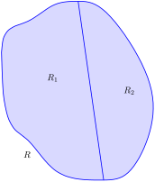
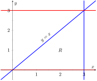

The definite integral of \(f\) over \([a,b]\text{,}\)\(\int_a^b f(x)\, dx\text{,}\) was introduced as “the signed area under the curve.” We approximated the value of this area by first subdividing \([a,b]\) into \(n\) subintervals, where the \(i\)th subinterval has length \(\dx_i\text{,}\) and letting \(c_i\) be any value in the \(i\)th subinterval. We formed rectangles that approximated part of the region under the curve with width \(\dx_i\text{,}\) height \(f(c_i)\text{,}\) and hence with area \(f(c_i)\dx_i\text{.}\) Summing all the rectangle's areas gave an approximation of the definite integral, and Theorem 5.3.21 stated that
connecting the area under the curve with sums of the areas of rectangles.
We use a similar approach in this section to find volume under a surface.
Let \(R\) be a closed, bounded region in the \(xy\)-plane and let \(z=f(x,y)\) be a continuous function defined on \(R\text{.}\) We wish to find the signed volume under the surface of \(f\) over \(R\text{.}\) (We use the term “signed volume” to denote that space above the \(xy\)-plane, under \(f\text{,}\) will have a positive volume; space above \(f\) and under the \(xy\)-plane will have a “negative” volume, similar to the notion of signed area used before.)
We start by partitioning \(R\) into \(n\) rectangular subregions as shown in Figure 14.2.1.(a). For simplicity's sake, we let all widths be \(\dx\) and all heights be \(\dy\text{.}\) Note that the sum of the areas of the rectangles is not equal to the area of \(R\text{,}\) but rather is a close approximation. Arbitrarily number the rectangles 1 through \(n\text{,}\) and pick a point \((x_i,y_i)\) in the \(i\)th subregion.
Figure14.2.1.Developing a method for finding signed volume under a surface
The volume of the rectangular solid whose base is the \(i\)th subregion and whose height is \(f(x_i,y_i)\) is \(V_i=f(x_i,y_i)\dx\dy\text{.}\) Such a solid is shown in Figure 14.2.1.(b). Note how this rectangular solid only approximates the true volume under the surface; part of the solid is above the surface and part is below.
For each subregion \(R_i\) used to approximate \(R\text{,}\) create the rectangular solid with base area \(\dx\dy\) and height \(f(x_i,y_i)\text{.}\) The sum of all rectangular solids is
This approximates the signed volume under \(f\) over \(R\text{.}\) As we have done before, to get a better approximation we can use more rectangles to approximate the region \(R\text{.}\)
In general, each rectangle could have a different width \(\dx_j\) and height \(\dy_k\text{,}\) giving the \(i\)th rectangle an area \(\Delta A_i = \dx_j\dy_k\) and the \(i\)th rectangular solid a volume of \(f(x_i,y_i)\Delta A_i\text{.}\) Let \(\norm{\Delta A}\) denote the length of the longest diagonal of all rectangles in the subdivision of \(R\text{;}\)\(\norm{\Delta A}\to 0\) means each rectangle's width and height are both approaching 0. If \(f\) is a continuous function, as \(\norm{\Delta A}\) shrinks (and hence \(n\to\infty\)) the summation \(\ds \sum_{i=1}^n f(x_i,y_i)\Delta A_i\) approximates the signed volume better and better. This leads to a definition.
Definition14.2.2.Double Integral, Signed Volume.
Let \(z=f(x,y)\) be a continuous function defined over a closed, bounded region \(R\) in the \(xy\)-plane. The signed volume \(V\) under \(f\) over \(R\) is denoted by the double integral
\begin{equation*}
V = \iint_R f(x,y)\, dA\text{.}
\end{equation*}
Definition 14.2.2 does not state how to find the signed volume, though the notation offers a hint. We need the next two theorems to evaluate double integrals to find volume.
Theorem14.2.3.Double Integrals and Signed Volume.
Let \(z=f(x,y)\) be a continuous function defined over a closed , bounded region \(R\) in the \(xy\)-plane. Then the signed volume \(V\) under \(f\) over \(R\) is
\begin{equation*}
V = \iint_R f(x,y)\, dA = \lim_{\norm{\Delta A}\to 0}\sum_{i=1}^n f(x_i,y_i)\Delta A_i\text{.}
\end{equation*}
This theorem states that we can find the exact signed volume using a limit of sums. The partition of the region \(R\) is not specified, so any partitioning where the diagonal of each rectangle shrinks to 0 results in the same answer.
This does not offer a very satisfying way of computing volume, though. Our experience has shown that evaluating the limits of sums can be tedious. We seek a more direct method.
Recall Theorem 7.2.2 in Section 7.2. This stated that if \(A(x)\) gives the cross-sectional area of a solid at \(x\text{,}\) then \(\int_a^b A(x)\, dx\) gave the volume of that solid over \([a,b]\text{.}\)
Consider Figure 14.2.4, where a surface \(z=f(x,y)\) is drawn over a region \(R\text{.}\) Fixing a particular \(x\) value, we can consider the area under \(f\) over \(R\) where \(x\) has that fixed value. That area can be found with a definite integral, namely
Remember that though the integrand contains \(x\text{,}\) we are viewing \(x\) as fixed. Also note that the bounds of integration are functions of \(x\text{:}\) the bounds depend on the value of \(x\text{.}\)
This gives a concrete method for finding signed volume under a surface. We could do a similar procedure where we started with \(y\) fixed, resulting in an iterated integral with the order of integration \(dx\, dy\text{.}\) The following theorem states that both methods give the same result, which is the value of the double integral. It is such an important theorem it has a name associated with it.
Theorem14.2.5.Fubini's Theorem.
Let \(R\) be a closed, bounded region in the \(xy\)-plane and let \(z=f(x,y)\) be a continuous function on \(R\text{.}\)
If \(R\) is bounded by \(a\leq x\leq b\) and \(g_1(x)\leq y\leq g_2(x)\text{,}\) where \(g_1\) and \(g_2\) are continuous functions on \([a,b]\text{,}\) then
\begin{equation*}
\iint_R f(x,y)\, dA = \int_a^b\int_{g_1(x)}^{g_2(x)} f(x,y)\, dy\, dx\text{.}
\end{equation*}
If \(R\) is bounded by \(c\leq y\leq d\) and \(h_1(y)\leq x\leq h_2(y)\text{,}\) where \(h_1\) and \(h_2\) are continuous functions on \([c,d]\text{,}\) then
\begin{equation*}
\iint_R f(x,y)\, dA = \int_c^d\int_{h_1(y)}^{h_2(y)} f(x,y)\, dx\, dy\text{.}
\end{equation*}
Note that once again the bounds of integration follow the “curve to curve, point to point” pattern discussed in the previous section. In fact, one of the main points of the previous section is developing the skill of describing a region \(R\) with the bounds of an iterated integral. Once this skill is developed, we can use double integrals to compute many quantities, not just signed volume under a surface.
Example14.2.6.Evaluating a double integral.
Let \(f(x,y) = xy+e^y\text{.}\) Find the signed volume under \(f\) on the region \(R\text{,}\) which is the rectangle with corners \((3,1)\) and \((4,2)\) pictured in Figure 14.2.7, using Fubini's Theorem and both orders of integration.
We wish to evaluate \(\iint_R \big(xy+e^y\big)\, dA\text{.}\) As \(R\) is a rectangle, the bounds are easily described as \(3\leq x\leq 4\) and \(1\leq y\leq 2\text{.}\)
Both orders of integration return the same result, as expected.
Example14.2.8.Evaluating a double integral.
Evaluate \(\iint_R \big(3xy-x^2-y^2+6\big)\, dA\text{,}\) where \(R\) is the triangle bounded by \(x=0\text{,}\)\(y=0\) and \(x/2+y=1\text{,}\) as shown in Figure 14.2.9.
While it is not specified which order we are to use, we will evaluate the double integral using both orders to help drive home the point that it does not matter which order we use.
Using the order \(dy\, dx\text{:}\) The bounds on \(y\) go from “curve to curve,” i.e., \(0\leq y\leq 1-x/2\text{,}\) and the bounds on \(x\) go from “point to point,” i.e., \(0\leq x\leq 2\text{.}\)
Now lets consider the order \(dx \, dy\text{.}\) Here \(x\) goes from “curve to curve,” \(0\leq x\leq 2-2y\text{,}\) and \(y\) goes from “point to point,” \(0\leq y\leq 1\text{:}\)
We obtained the same result using both orders of integration.
Note how in these examples that the bounds of integration depend only on \(R\text{;}\) the bounds of integration have nothing to do with \(f(x,y)\text{.}\) This is an important concept, so we include it as a Key Idea.
Key Idea14.2.10.Double Integration Bounds.
When evaluating \(\iint_R f(x,y)\, dA\) using an iterated integral, the bounds of integration depend only on \(R\text{.}\) The surface \(f\) does not determine the bounds of integration.
Before doing another example, we give some properties of double integrals. Each should make sense if we view them in the context of finding signed volume under a surface, over a region.
Theorem14.2.11.Properties of Double Integrals.
Let \(f\) and \(g\) be continuous functions over a closed, bounded plane region \(R\text{,}\) and let \(c\) be a constant.
\(\ds \iint_Rc\,f(x,y)\, dA = c\iint_Rf(x,y)\, dA\text{.}\)
\(\displaystyle \ds \iint_R \big(f(x,y)\pm g(x,y)\big)\, dA = \iint_R f(x,y)\, dA \pm \iint_R g(x,y)\, dA\)
If \(f(x,y)\geq 0\) on \(R\text{,}\) then \(\ds \iint_R f(x,y)\, dA\geq 0\text{.}\)
If \(f(x,y)\geq g(x,y)\) on \(R\text{,}\) then \(\ds \iint_R f(x,y)\, dA\geq \iint_R g(x,y)\, dA\text{.}\)
Let \(R\) be the union of two nonoverlapping regions, \(R = R_1\bigcup R_2\) (see Figure 14.2.12). Then
\begin{equation*}
\iint_R f(x,y)\, dA = \iint_{R_1}f(x,y)\, dA+ \iint_{R_2}f(x,y)\, dA\text{.}
\end{equation*}

Figure14.2.12.\(R\) is the union of two nonoverlapping regions, \(R_1\) and \(R_2\)
Example14.2.13.Evaluating a double integral.
Let \(f(x,y) = \sin(x) \cos(y)\) and \(R\) be the triangle with vertices \((-1,0)\text{,}\)\((1,0)\) and \((0,1)\) (see Figure 14.2.14). Evaluate the double integral \(\iint_Rf(x,y)\, dA\text{.}\)
If we attempt to integrate using an iterated integral with the order \(dy\, dx\text{,}\) note how there are two upper bounds on \(R\) meaning we'll need to use two iterated integrals. We would need to split the triangle into two regions along the \(y\)-axis, then use Theorem 14.2.11, part 5.
Instead, let's use the order \(dx\, dy\text{.}\) The curves bounding \(x\) are \(y-1\leq x\leq 1-y\text{;}\) the bounds on \(y\) are \(0\leq y\leq 1\text{.}\) This gives us:
Recall that the cosine function is an even function; that is, \(\cos(x) = \cos(-x)\text{.}\) Therefore, from the last integral above, we have \(\cos(y-1) = \cos(1-y)\text{.}\) Thus the integrand simplifies to 0, and we have
It turns out that over \(R\text{,}\) there is just as much volume above the \(xy\)-plane as below (look again at Figure 14.2.14), giving a final signed volume of 0.
Example14.2.15.Evaluating a double integral.
Evaluate \(\iint_R (4-y)\, dA\text{,}\) where \(R\) is the region bounded by the parabolas \(y^2=4x\) and \(x^2=4y\text{,}\) graphed in Figure 14.2.16.
Graphing each curve can help us find their points of intersection. Solving analytically, the second equation tells us that \(y=x^2/4\text{.}\) Substituting this value in for \(y\) in the first equation gives us \(x^4/16 = 4x\text{.}\) Solving for \(x\text{:}\)
Thus we've found analytically what was easy to approximate graphically: the regions intersect at \((0,0)\) and \((4,4)\text{,}\) as shown in Figure 14.2.16.
We now choose an order of integration: \(dy\, dx\) or \(dx\, dy\text{?}\) Either order works; since the integrand does not contain \(x\text{,}\) choosing \(dx\, dy\) might be simpler — at least, the first integral is very simple.
Thus we have the following “curve to curve, point to point” bounds:
\begin{equation*}
y^2/4\leq x\leq 2\sqrt y, \text{ and } 0\leq y\leq 4\text{.}
\end{equation*}
The signed volume under the surface \(f\) is about 11.7 cubic units.
In the previous section we practiced changing the order of integration of a given iterated integral, where the region \(R\) was not explicitly given. Changing the bounds of an integral is more than just an test of understanding. Rather, there are cases where integrating in one order is really hard, if not impossible, whereas integrating with the other order is feasible.
Example14.2.17.Changing the order of integration.
Rewrite the iterated integral \(\ds \int_0^3\int_y^3 e^{-x^2}\, dx\, dy\) with the order \(dy\, dx\text{.}\) Comment on the feasibility to evaluate each integral.
Once again we make a sketch of the region over which we are integrating to facilitate changing the order. The bounds on \(x\) are from \(x=y\) to \(x=3\text{;}\) the bounds on \(y\) are from \(y=0\) to \(y=3\text{.}\) These curves are sketched in Figure 14.2.18, enclosing the region \(R\text{.}\)

Figure14.2.18.Determining the region \(R\) determined by the bounds of integration in Example 14.2.17
To change the bounds, note that the curves bounding \(y\) are \(y=0\) up to \(y=x\text{;}\) the triangle is enclosed between \(x=0\) and \(x=3\text{.}\) Thus the new bounds of integration are \(0\leq y\leq x\) and \(0\leq x\leq 3\text{,}\) giving the iterated integral \(\ds \int_0^3\int_0^x e^{-x^2}\, dy\, dx\text{.}\)
How easy is it to evaluate each iterated integral? Consider the order of integrating \(dx\, dy\text{,}\) as given in the original problem. The first indefinite integral we need to evaluate is \(\int e^{-x^2}\, dx\text{;}\) we have stated before (see Section 5.5) that this integral cannot be evaluated in terms of elementary functions. We are stuck.
Changing the order of integration makes a big difference here. In the second iterated integral, we are faced with \(\int e^{-x^2}\, dy\text{;}\) integrating with respect to \(y\) gives us \(ye^{-x^2}+C\text{,}\) and the first definite integral evaluates to
\begin{equation*}
\int_0^x e^{-x^2}\, dy = xe^{-x^2}\text{.}
\end{equation*}
This last integral is easy to evaluate with substitution, giving a final answer of \(\frac12(1-e^{-9})\approx 0.5\text{.}\)Figure 14.2.19 shows the surface over \(R\text{.}\)
Figure14.2.19.Showing the surface \(f\) defined in Example 14.2.17 over its region \(R\)
In short, evaluating one iterated integral is impossible; the other iterated integral is relatively simple.
Definition 5.4.26 defines the average value of a single-variable function \(f(x)\) on the interval \([a,b]\) as
\begin{equation*}
\text{ average value of \(f(x)\) on \([a,b]\) } = \frac1{b-a}\int_a^b f(x)\, dx;
\end{equation*}
that is, it is the “area under \(f\) over an interval divided by the length of the interval.” We make an analogous statement here: the average value of \(z=f(x,y)\) over a region \(R\) is the volume under \(f\) over \(R\) divided by the area of \(R\text{.}\)
Definition14.2.20.The Average Value of \(f\) on \(R\).
Let \(z=f(x,y)\) be a continuous function defined over a closed, bounded region \(R\) in the \(xy\)-plane. The average value of \(f\) on \(R\) is
\begin{equation*}
\text{ average value of \(f\) on \(R\) } = \frac{\ds \iint_R f(x,y)\, dA}{\ds\iint_R \, dA}\text{.}
\end{equation*}
Example14.2.21.Finding average value of a function over a region \(R\).
Find the average value of \(f(x,y) = 4-y\) over the region \(R\text{,}\) which is bounded by the parabolas \(y^2=4x\) and \(x^2=4y\text{.}\) Note: this is the same function and region as used in Example 14.2.15.
Figure14.2.22.Finding the average value of \(f\) in Example 14.2.21
The previous section introduced the iterated integral in the context of finding the area of plane regions. This section has extended our understanding of iterated integrals; now we see they can be used to find the signed volume under a surface.
This new understanding allows us to revisit what we did in the previous section. Given a region \(R\) in the plane, we computed \(\iint_R 1\, dA\text{;}\) again, our understanding at the time was that we were finding the area of \(R\text{.}\) However, we can now view the graph \(z=1\) as a surface, a flat surface with constant \(z\)-value of 1. The double integral \(\iint_R 1\, dA\) finds the volume, under \(z=1\text{,}\) over \(R\text{,}\) as shown in Figure 14.2.23. Basic geometry tells us that if the base of a general right cylinder has area \(A\text{,}\) its volume is \(A\cdot h\text{,}\) where \(h\) is the height. In our case, the height is 1. We were “actually” computing the volume of a solid, though we interpreted the number as an area.
Figure14.2.23.Showing how an iterated integral used to find area also finds a certain volume
The next section extends our abilities to find “volumes under surfaces.” Currently, some integrals are hard to compute because either the region \(R\) we are integrating over is hard to define with rectangular curves, or the integrand itself is hard to deal with. Some of these problems can be solved by converting everything into polar coordinates.
ExercisesExercises
Terms and Concepts
1.
An integral can be interpreted as giving the signed area over an interval; a double integral can be interpreted as giving the signed over a region.
2.
Explain why the following statement is false: Fubini's Theorem states that
Set up the iterated integrals, in both orders, that evaluate the given double integral for the described region \(R\text{.}\)
Evaluate one of the iterated integrals to find the signed volume under the surface \(z=f(x,y)\) over the region \(R\text{.}\)
11.
\(\ds \iint_R x^2y\, dA\text{,}\) where \(R\) is bounded by \(y=\sqrt{x}\) and \(y=x^2\text{.}\)
12.
\(\ds \iint_R x^2y\, dA\text{,}\) where \(R\) is bounded by \(y=\sqrt[3]{x}\) and \(y=x^3\text{.}\)
13.
\(\ds \iint_R x^2-y^2\, dA\text{,}\) where \(R\) is the rectangle with corners \((-1,-1)\text{,}\)\((1,-1)\text{,}\)\((1,1)\) and \((-1,1)\text{.}\)
14.
\(\ds \iint_R ye^x\, dA\text{,}\) where \(R\) is bounded by \(x=0\text{,}\)\(x=y^2\) and \(y=1\text{.}\)
15.
\(\ds \iint_R \big(6-3x-2y\big)\, dA\text{,}\) where \(R\) is bounded by \(x=0\text{,}\)\(y=0\) and \(3x+2y=6\text{.}\)
16.
\(\ds \iint_R e^y\, dA\text{,}\) where \(R\) is bounded by \(y=\ln(x)\) and
\(\ds y=\frac{1}{e-1}(x-1)\text{.}\)
17.
\(\ds \iint_R \big(x^3y-x\big)\, dA\text{,}\) where \(R\) is the half of the circle \(x^2+y^2=9\) in the first and second quadrants.
18.
\(\ds \iint_R \big(4-3y\big)\, dA\text{,}\) where \(R\) is bounded by \(y=0\text{,}\)\(y=x/e\) and \(y=\ln(x)\text{.}\)
Exercise Group.
In the following exercises, state why it is difficult/impossible to integrate the iterated integral in the given order of integration. Change the order of integration and evaluate the new iterated integral.
In the following exercises, find the average value of \(f\) over the region \(R\text{.}\) Notice how these functions and regions are related to the iterated integrals given in Exercises 14.2.5 — Exercise 14.2.8.
23.
\(\ds f(x,y) =\frac xy+3\text{;}\)\(R\) is the rectangle with opposite corners \((-1,1)\) and \((1,2)\text{.}\)
24.
\(\ds f(x,y) = \sin(x) \cos(y)\text{;}\)\(R\) is bounded by \(x=0\text{,}\)\(x=\pi\text{,}\)\(y=-\pi/2\) and \(y=\pi/2\text{.}\)
25.
\(\ds f(x,y) = 3x^2-y+2\text{;}\)\(R\) is bounded by the lines \(y=0\text{,}\)\(y=2-x/2\) and \(x=0\text{.}\)
26.
\(\ds f(x,y) =x^2y-xy^2\text{;}\)\(R\) is bounded by \(y=x\text{,}\)\(y=1\) and \(x=3\text{.}\)